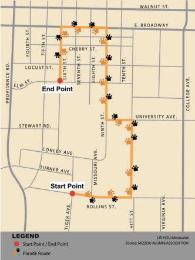

Marching Mizzou plays an important role in MU homecoming's traditions
Click on the photo to read about how Marching Mizzou has always had a strong presence during the Homecoming parade and the Homecoming Game.

The homecoming parade brings hundreds of families to downtown Columbia
Saturday's homecoming parade will begin on campus and end downtown. A variety of campus and community groups will be walkign in the parade. Click on the photo above to see the parade route as well as other homeocoming maps.
History of Faurot Field
Click on the photo to learn more about how Faurot Field has become synomous with Mizzou Football and Homecoming.
 Missourian Homecoming Guide
Missourian Homecoming Guide